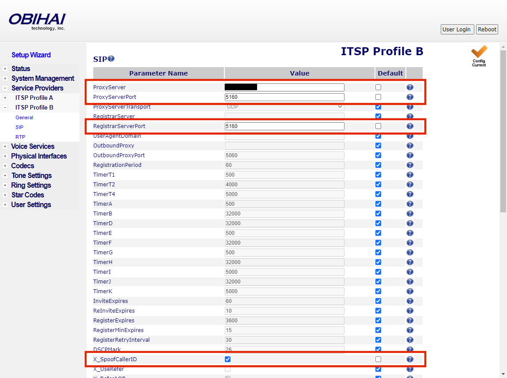

Skip to main content
102 - Connecting to a POTS Line
This guide will walk you through setting up an OBi110, to allow FreePBX to place and receive
calls from phones outside of your network.
Prerequisites
- Install and configure RasPBX completed steps with a minimum of one softphone
Required Items
-
OBi100 or OBi110 analog telephone adapter (ATA) (You may be able to substitute with similar device
however screens and steps will be different.)
NOTE: OBiTALK no longer produces OBi110 ATAs. The current models are OBi2xx
series. Some people have commented that there are issues with the OBi200 series but they are
usable. If you wish to use an OBi1xx ATA, you may find them on auction sites such as eBay.
Search eBay for OBi100 or
OBi110.
-
Analog telephone line / Plain Old Telephone Service (POTS)
Obtaining the OBi110 IP Address
In order to complete the steps in this guide, you will need to know the IP Address of the
OBi110. There are a few ways to get the IP Address of the OBi110 ATA once it is connected
to the network.
-
Option 1 - With a phone connected to the phone port
- On the phone, dial * * * 1
- The voice prompt will tell you the IP Address and DHCP status
-
Option 2 - Looking at your DHCP server leases
-
If you don't know what your DHCP server's IP Address is and you are using Windows, you
may type "ipconfig /all" in a command window to get the DHCP information. The IP
Address of the DHCP server will be displayed on the line "DHCP Server"
NOTE: If you do not see "DHCP Server" in the ipconfig output,
then the Windows machine may be assigned a static IP Address.
Windows Command Window with networking information displayed
-
Once you have the DHCP Server's address, access your DHCP Server to view the active
leases. Typically the DHCP Server is a router with a web interface but it may be a
another PC.
Sample device list from router web management portal
Sample leases from Windows DHCP Server
Step 1 - Reset the OBi110 ATA
This step is optional but is recommended, especially if the ATA has been purchased as a used
device. Resetting the ATA to factory defaults will provide a better experience.
There are at least 3 ways to factory reset your OBi110 ATA.
-
Option 1 - Paper clip method
- Power on the unit (no need to connect phone or internet)
-
Locate the reset hole on the bottom of the OBi110 located at the top-left corner of the
product label.
- Insert tip of a paper-clip and press for 10 seconds
- The power LED will blink for about 5 seconds and the unit will reboot
-
Option 2 - Using a phone attached to the phone port
- Power on the unit and attach a phone to the phone port
-
Take the phone off-hook and press the star key three times followed by the number 8;
i.e. * * * 8
- When prompted, press "1" to confirm the factory reset
- The power LED will blink for about 5 seconds and the unit will reboot
-
Option 3 - Using the web management portal
-
With the OBi110 powered on and connected to the network, open a web browser and navigate
to the OBi110 web management portal
-
Login to the web management portal
NOTE: The default username / password is admin / admin
-
Expand the "System Management" menu option on the left and click the "Device Update"
item
-
On the "Device Update" page, click the "Reset" button in the "Reset Configuration"
section.
-
Click the "OK" button on the confirmation popup to reset the ATA.
- The power LED will blink for about 5 seconds and the unit will reboot
The following steps are from Martin Anderson's post on the
FreePBX Website. You may wish to follow
Martin's guide as he has some additional steps regarding setting up a static IP Address.
Step 2 - Configure the OBi110 as an FXO Gateway
-
Open the OBi110 web management portal and login
-
Optionally setup the Timezone
You may wish to change the timezone if you are not located in the Pacific Standard
Timezone (PST).
-
Select "System Management" > "Network Settings" from the menu on the left
-
Change the LocalTimeZone by picking a value from the list, then click the "Submit"
button

-
Navigate to the SIP settings by navigating the menu on the left side. Click on "Service
Providers" > "ITSP Profile B" > "SIP"
-
Change the following values and click the "Submit" button.
NOTE: You must uncheck the "Default" checkboxes to change values
- ProxyServer: Enter the IP Address of the RasPBX
- ProxyServerPort: 5160
- RegistrarServerPort: 5160
- X_SpoofCallerID: Check the checkbox
- X_AccessList: Enter the IP Address of the RasPBX


-
Navigate to the SP2 settings by navigating the menu on the left side. Click on "Voice
Services" > "SP2 Service"
-
Change the following values and click the "Submit" button.
- X_ServProvProfile: Select "B" from the drop-down list
- X_InboundCallRoute: LI
-
AuthUserName: Enter a name. It will be used in the configuration of the
trunk that will be setup in FreePBX (i.e. OBITRUNK1)
-
AuthPassword: Enter a password. It will be used in the configuration of the
trunk that will be setup in FreePBX (i.e. FXOPASSWORD)
- MessageWaiting: Uncheck the checkbox
-
Navigate to the Line Port settings by navigating the menu on the left side. Click on
"Physical Interfaces" > "LINE Port"
-
Change the following values and click the "Submit" button.
-
InboundCallRoute: SP2(phone number of the line that will be
attached to your LINE port)
example: SP2(7165550123)
- RingDelay: 3500
- DialDelay: 1000
- DialDigitOnTime: 50
- DialDigitOffTime: 50
- SilenceTimeThreshold: 600

-
Reboot the OBi110 to have the changes take effect by clicking on the "Reboot" button
in the upper right corner of the screen
Step 3 - Set-up a Trunk in FreePBX
-
Open up the FreePBX web management portal, select "FreePBX Administration" and log in
-
From the "Connectivity" menu, click the "Trunks" item
-
Click the "+ Add Trunk" button, then select "+ Add SIP (chan_sip) Trunk" from the drop-down
list
-
Enter the following values on the "General" tab
-
Trunk Name: Enter a name for the trunk
example: Obitrunk1
-
Outbound CallerID: Enter the phone number of the POTS line that is connected to the
OBi110
example: 7165550123
- CID Options: Allow Any CID
- Maximum Channels: Blank
- Asterisk Trunk Dial Options: System
- Continue if Busy: No
- Disable Trunk: No
- Monitor Trunk Failures: No
-
Enter the following values on the "sip Settings" tab / "Outgoing" tab, then click
the "Submit" button
-
Trunk Name: Enter the "AuthUserName" used in the setup of the OBi110 "Voice
Services" > "SP2 Service Setting"
example: OBITRUNK1
-
PEER Details: Enter the following but set username and secret to the AuthUserName
and AuthPassword entered in the setup of the OBi110 "Voice Services" > "SP2
Service Setting"
username=OBITRUNK1
secret=FXOPASSWORD
host=dynamic
type=friend
context=from-trunk
qualify=yes
dtmfmode=rfc2833
canreinvite=no
disallow=all
allow=ulaw
NOTE: After clicking the "Submit" button, there will be a red "Apply
Config" button in the top right corner. We will click the button at the end, however there
is no harm in clicking it early. It does take a while for the changes to be applied so it
saves a bit of time if you wait until the end.
Step 4 - Set-up an Inbound Route in FreePBX
-
From the "Connectivity" menu, click the "Inbound Routes" item
-
Click the "+ Add Inbound Route" button
-
Enter the following values on the "General" tab, then click the "Submit" button
- Description: Obi110
-
DID Number : Enter the phone number of the POTS line that is connected to the
OBi110
example: 7165550123
- CallerID Number: Blank
- CID Priority Route: No
- Alert Info: None
- Ringer Volume Override: None
- CID name prefix: POTS-
- Music On Hold: Default
-
Set Destination: Extensions / 201
NOTE: This is for example only to make the setup simple. You may wish
to set this to IVR (Interactive Voice Response). I do not plan to go into how to set this
up as Chris at Crosstalk Solutions has an excellent YouTube video on setting up Announcements.
Step 5 - Set-up an Outbound Route in FreePBX
-
From the "Connectivity" menu, click the "Outbound Routes" item
-
Click the "+ Add Outbound Route" button
-
Enter the following values on the "General" tab
- Route Name: 9DialsPOTS
- Route CID: Blank
- Override Extension: No
- Route Password: Blank
- Route Type: None Selected
- Music On Hold?: default
- Trunk Sequence for Matched Routes: Obitrunk1
- Optional Destination on Congestion: Normal Congestion
-
Click the "Dial Patterns" tab, add the following patterns, then click the "Submit" button
-
Dial Pattern 1
- prepend: Blank
- prefix: 9
- match pattern: Blank
- CallerID: Blank
-
Dial Pattern 2
- prepend: Blank
- prefix: 9
- match pattern: 1NXXNXXXXXX
- CallerID: Blank
-
Dial Pattern 3
- prepend: Blank
- prefix: 9
- match pattern: NXXNXXXXXX
- CallerID: Blank
-
Dial Pattern 4
- prepend: Blank
- prefix: 9
- match pattern: X11
- CallerID: Blank
-
Click the "+ Add Outbound Route" button

-
Enter the following values on the "General" tab
- Route Name: EMERGENCY
- Route CID: Blank
- Override Extension: No
- Route Password: Blank
- Route Type: None Selected
- Music On Hold?: default
- Trunk Sequence for Matched Routes: Obitrunk1
- Optional Destination on Congestion: Normal Congestion
-
Click the "Dial Patterns" tab, add the following patterns, then click the "Submit" button
-
Dial Pattern 1
- prepend: Blank
- prefix: 9
- match pattern: Blank
- CallerID: Blank
-
Dial Pattern 2
- prepend: Blank
- prefix: Blank
- match pattern: 911
- CallerID: Blank

-
Click on the red "Apply Config" button in the upper right corner.
-
Reboot the Raspberry Pi to make certain that changes take effect. At the terminal window,
log in, if not already logged in and type the command "sudo shutdown -r now"
Step 6 - Place Test Calls
-
Place an outgoing test call by using one of the softphones to an outside number
NOTE: Remember to dial the prefix to get an external line. In the steps
above, the prefix was set to "9" for external calls.
-
Place an incoming test call by calling the POTS number from another phone such as a mobile
phone